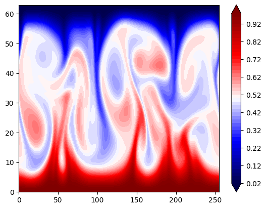

# Step 1: Install FFTW
!apt-get install libfftw3-dev
!apt-get install libfftw3-mpi-dev
#!pip install cython==3.0.1
# Step 2: Set paths for Dedalus installation
import os
import matplotlib.pyplot as plt
os.environ['MPI_INCLUDE_PATH'] = "/usr/lib/x86_64-linux-gnu/openmpi/include"
os.environ['MPI_LIBRARY_PATH'] = "/usr/lib/x86_64-linux-gnu"
os.environ['FFTW_INCLUDE_PATH'] = "/usr/include"
os.environ['FFTW_LIBRARY_PATH'] = "/usr/lib/x86_64-linux-gnu"
# Step 3: Install Dedalus using pip
!echo "Cython<3" > cython_constraint.txt
!CC=mpicc PIP_CONSTRAINT=cython_constraint.txt pip3 install --no-cache http://github.com/dedalusproject/dedalus/zipball/master/
#!CC=mpicc PIP_CONSTRAINT=cython_constraint.txt pip install dedalus
import numpy as np
import matplotlib.pyplot as plt
import matplotlib.animation as ani
import dedalus.public as de
from dedalus.extras import flow_tools
from dedalus.tools import post
import shutil
import random
import time
import h5py
import pathlib
import logging
logger = logging.getLogger('2D RB Convection')
zsh:1: command not found: apt-get
zsh:1: command not found: apt-get
---------------------------------------------------------------------------
ImportError Traceback (most recent call last)
File /Users/Shared/miniconda3/envs/jupyterbook/lib/python3.9/site-packages/numpy/_core/__init__.py:23
22 try:
---> 23 from . import multiarray
24 except ImportError as exc:
File /Users/Shared/miniconda3/envs/jupyterbook/lib/python3.9/site-packages/numpy/_core/multiarray.py:10
9 import functools
---> 10 from . import overrides
11 from . import _multiarray_umath
File /Users/Shared/miniconda3/envs/jupyterbook/lib/python3.9/site-packages/numpy/_core/overrides.py:8
7 from .._utils._inspect import getargspec
----> 8 from numpy._core._multiarray_umath import (
9 add_docstring, _get_implementing_args, _ArrayFunctionDispatcher)
12 ARRAY_FUNCTIONS = set()
ImportError: dlopen(/Users/Shared/miniconda3/envs/jupyterbook/lib/python3.9/site-packages/numpy/_core/_multiarray_umath.cpython-39-darwin.so, 0x0002): Library not loaded: @rpath/libgfortran.5.dylib
Referenced from: <CAA510D4-816A-34E5-9021-485EF5D56159> /Users/Shared/miniconda3/envs/jupyterbook/lib/libopenblas.0.dylib
Reason: tried: '/Users/Shared/miniconda3/envs/jupyterbook/lib/libgfortran.5.dylib' (duplicate LC_RPATH '@loader_path'), '/Users/Shared/miniconda3/envs/jupyterbook/lib/libgfortran.5.dylib' (duplicate LC_RPATH '@loader_path'), '/Users/Shared/miniconda3/envs/jupyterbook/lib/python3.9/site-packages/numpy/_core/../../../../libgfortran.5.dylib' (duplicate LC_RPATH '@loader_path'), '/Users/Shared/miniconda3/envs/jupyterbook/lib/python3.9/site-packages/numpy/_core/../../../../libgfortran.5.dylib' (duplicate LC_RPATH '@loader_path'), '/Users/Shared/miniconda3/envs/jupyterbook/bin/../lib/libgfortran.5.dylib' (duplicate LC_RPATH '@loader_path'), '/Users/Shared/miniconda3/envs/jupyterbook/bin/../lib/libgfortran.5.dylib' (duplicate LC_RPATH '@loader_path'), '/usr/local/lib/libgfortran.5.dylib' (no such file), '/usr/lib/libgfortran.5.dylib' (no such file, not in dyld cache)
During handling of the above exception, another exception occurred:
ImportError Traceback (most recent call last)
File /Users/Shared/miniconda3/envs/jupyterbook/lib/python3.9/site-packages/numpy/__init__.py:114
113 try:
--> 114 from numpy.__config__ import show as show_config
115 except ImportError as e:
File /Users/Shared/miniconda3/envs/jupyterbook/lib/python3.9/site-packages/numpy/__config__.py:4
3 from enum import Enum
----> 4 from numpy._core._multiarray_umath import (
5 __cpu_features__,
6 __cpu_baseline__,
7 __cpu_dispatch__,
8 )
10 __all__ = ["show"]
File /Users/Shared/miniconda3/envs/jupyterbook/lib/python3.9/site-packages/numpy/_core/__init__.py:49
26 msg = """
27
28 IMPORTANT: PLEASE READ THIS FOR ADVICE ON HOW TO SOLVE THIS ISSUE!
(...)
47 """ % (sys.version_info[0], sys.version_info[1], sys.executable,
48 __version__, exc)
---> 49 raise ImportError(msg)
50 finally:
ImportError:
IMPORTANT: PLEASE READ THIS FOR ADVICE ON HOW TO SOLVE THIS ISSUE!
Importing the numpy C-extensions failed. This error can happen for
many reasons, often due to issues with your setup or how NumPy was
installed.
We have compiled some common reasons and troubleshooting tips at:
https://numpy.org/devdocs/user/troubleshooting-importerror.html
Please note and check the following:
* The Python version is: Python3.9 from "/Users/Shared/miniconda3/envs/jupyterbook/bin/python"
* The NumPy version is: "2.0.2"
and make sure that they are the versions you expect.
Please carefully study the documentation linked above for further help.
Original error was: dlopen(/Users/Shared/miniconda3/envs/jupyterbook/lib/python3.9/site-packages/numpy/_core/_multiarray_umath.cpython-39-darwin.so, 0x0002): Library not loaded: @rpath/libgfortran.5.dylib
Referenced from: <CAA510D4-816A-34E5-9021-485EF5D56159> /Users/Shared/miniconda3/envs/jupyterbook/lib/libopenblas.0.dylib
Reason: tried: '/Users/Shared/miniconda3/envs/jupyterbook/lib/libgfortran.5.dylib' (duplicate LC_RPATH '@loader_path'), '/Users/Shared/miniconda3/envs/jupyterbook/lib/libgfortran.5.dylib' (duplicate LC_RPATH '@loader_path'), '/Users/Shared/miniconda3/envs/jupyterbook/lib/python3.9/site-packages/numpy/_core/../../../../libgfortran.5.dylib' (duplicate LC_RPATH '@loader_path'), '/Users/Shared/miniconda3/envs/jupyterbook/lib/python3.9/site-packages/numpy/_core/../../../../libgfortran.5.dylib' (duplicate LC_RPATH '@loader_path'), '/Users/Shared/miniconda3/envs/jupyterbook/bin/../lib/libgfortran.5.dylib' (duplicate LC_RPATH '@loader_path'), '/Users/Shared/miniconda3/envs/jupyterbook/bin/../lib/libgfortran.5.dylib' (duplicate LC_RPATH '@loader_path'), '/usr/local/lib/libgfortran.5.dylib' (no such file), '/usr/lib/libgfortran.5.dylib' (no such file, not in dyld cache)
The above exception was the direct cause of the following exception:
ImportError Traceback (most recent call last)
Cell In[1], line 7
4 #!pip install cython==3.0.1
5 # Step 2: Set paths for Dedalus installation
6 import os
----> 7 import matplotlib.pyplot as plt
8 os.environ['MPI_INCLUDE_PATH'] = "/usr/lib/x86_64-linux-gnu/openmpi/include"
9 os.environ['MPI_LIBRARY_PATH'] = "/usr/lib/x86_64-linux-gnu"
File /Users/Shared/miniconda3/envs/jupyterbook/lib/python3.9/site-packages/matplotlib/__init__.py:159
155 from packaging.version import parse as parse_version
157 # cbook must import matplotlib only within function
158 # definitions, so it is safe to import from it here.
--> 159 from . import _api, _version, cbook, _docstring, rcsetup
160 from matplotlib.cbook import sanitize_sequence
161 from matplotlib._api import MatplotlibDeprecationWarning
File /Users/Shared/miniconda3/envs/jupyterbook/lib/python3.9/site-packages/matplotlib/cbook.py:24
21 import types
22 import weakref
---> 24 import numpy as np
26 try:
27 from numpy.exceptions import VisibleDeprecationWarning # numpy >= 1.25
File /Users/Shared/miniconda3/envs/jupyterbook/lib/python3.9/site-packages/numpy/__init__.py:119
115 except ImportError as e:
116 msg = """Error importing numpy: you should not try to import numpy from
117 its source directory; please exit the numpy source tree, and relaunch
118 your python interpreter from there."""
--> 119 raise ImportError(msg) from e
121 from . import _core
122 from ._core import (
123 False_, ScalarType, True_, _get_promotion_state, _no_nep50_warning,
124 _set_promotion_state, abs, absolute, acos, acosh, add, all, allclose,
(...)
169 where, zeros, zeros_like
170 )
ImportError: Error importing numpy: you should not try to import numpy from
its source directory; please exit the numpy source tree, and relaunch
your python interpreter from there.
from google.colab import drive
drive.mount('/content/gdrive')
Mounted at /content/gdrive
# clean up the destination files
!rm -rf /content/gdrive/MyDrive/website-hugo/chaos_and_predictability/week3/RB2D/simulation/snapshots
import dedalus.public as d3
import logging
# Parameters
Lx, Lz = 4, 1
Nx, Nz = 256, 64
Rayleigh = 2e6
Prandtl = 1
dealias = 3/2
stop_sim_time = 50
timestepper = d3.RK222
max_timestep = 0.125
dtype = np.float64
# Bases
coords = d3.CartesianCoordinates('x', 'z')
dist = d3.Distributor(coords, dtype=dtype)
xbasis = d3.RealFourier(coords['x'], size=Nx, bounds=(0, Lx), dealias=dealias)
zbasis = d3.ChebyshevT(coords['z'], size=Nz, bounds=(0, Lz), dealias=dealias)
# Fields
p = dist.Field(name='p', bases=(xbasis,zbasis))
b = dist.Field(name='b', bases=(xbasis,zbasis))
u = dist.VectorField(coords, name='u', bases=(xbasis,zbasis))
tau_p = dist.Field(name='tau_p')
tau_b1 = dist.Field(name='tau_b1', bases=xbasis)
tau_b2 = dist.Field(name='tau_b2', bases=xbasis)
tau_u1 = dist.VectorField(coords, name='tau_u1', bases=xbasis)
tau_u2 = dist.VectorField(coords, name='tau_u2', bases=xbasis)
# Substitutions
kappa = (Rayleigh * Prandtl)**(-1/2)
nu = (Rayleigh / Prandtl)**(-1/2)
x, z = dist.local_grids(xbasis, zbasis)
ex, ez = coords.unit_vector_fields(dist)
lift_basis = zbasis.derivative_basis(1)
lift = lambda A: d3.Lift(A, lift_basis, -1)
grad_u = d3.grad(u) + ez*lift(tau_u1) # First-order reduction
grad_b = d3.grad(b) + ez*lift(tau_b1) # First-order reduction
# Problem
# First-order form: "div(f)" becomes "trace(grad_f)"
# First-order form: "lap(f)" becomes "div(grad_f)"
problem = d3.IVP([p, b, u, tau_p, tau_b1, tau_b2, tau_u1, tau_u2], namespace=locals())
problem.add_equation("trace(grad_u) + tau_p = 0")
problem.add_equation("dt(b) - kappa*div(grad_b) + lift(tau_b2) = - u@grad(b)")
problem.add_equation("dt(u) - nu*div(grad_u) + grad(p) - b*ez + lift(tau_u2) = - u@grad(u)")
problem.add_equation("b(z=0) = Lz")
problem.add_equation("u(z=0) = 0")
problem.add_equation("b(z=Lz) = 0")
problem.add_equation("u(z=Lz) = 0")
problem.add_equation("integ(p) = 0") # Pressure gauge
# Solver
solver = problem.build_solver(timestepper)
solver.stop_sim_time = stop_sim_time
# Initial conditions
b.fill_random('g', seed=42, distribution='normal', scale=1e-3) # Random noise
b['g'] *= z * (Lz - z) # Damp noise at walls
b['g'] += Lz - z # Add linear background
# Analysis
snapshots = solver.evaluator.add_file_handler('snapshots', sim_dt=0.25, max_writes=50)
snapshots.add_task(b, name='buoyancy')
snapshots.add_task(-d3.div(d3.skew(u)), name='vorticity')
# CFL
CFL = d3.CFL(solver, initial_dt=max_timestep, cadence=10, safety=0.5, threshold=0.05,
max_change=1.5, min_change=0.5, max_dt=max_timestep)
CFL.add_velocity(u)
# Flow properties
flow = d3.GlobalFlowProperty(solver, cadence=10)
flow.add_property(np.sqrt(u@u)/nu, name='Re')
# Main loop
startup_iter = 10
try:
logger.info('Starting main loop')
while solver.proceed:
timestep = CFL.compute_timestep()
solver.step(timestep)
if (solver.iteration-1) % 10 == 0:
max_Re = flow.max('Re')
logger.info('Iteration=%i, Time=%e, dt=%e, max(Re)=%f' %(solver.iteration, solver.sim_time, timestep, max_Re))
except:
logger.error('Exception raised, triggering end of main loop.')
raise
finally:
solver.log_stats()
DEBUG:distributor:Mesh: []
DEBUG:problems:Adding equation 0
DEBUG:problems: LHS: Trace(Grad(u) + ez*<Field 135388423830016>*tau_u1) + C(C(tau_p))
DEBUG:problems: RHS: 0
DEBUG:problems: condition: True
DEBUG:problems: M: 0
DEBUG:problems: L: Trace(Grad(u) + ez*<Field 135388423830016>*tau_u1) + C(C(tau_p))
DEBUG:problems: F: <Field 135388423816000>
DEBUG:problems:Adding equation 1
DEBUG:problems: LHS: C(dt(b)) + -1*0.0007071067811865475*Div(Grad(b) + ez*<Field 135388423830016>*tau_b1) + C(<Field 135388423830016>*tau_b2)
DEBUG:problems: RHS: -1*u@Grad(b)
DEBUG:problems: condition: True
DEBUG:problems: M: C(b)
DEBUG:problems: L: -1*0.0007071067811865475*Div(Grad(b) + ez*<Field 135388423830016>*tau_b1) + C(<Field 135388423830016>*tau_b2)
DEBUG:problems: F: C(-1*u@Grad(b))
DEBUG:problems:Adding equation 2
DEBUG:problems: LHS: C(dt(u)) + -1*0.0007071067811865475*Div(Grad(u) + ez*<Field 135388423830016>*tau_u1) + C(Grad(p)) + C(-1*b*ez) + C(<Field 135388423830016>*tau_u2)
DEBUG:problems: RHS: -1*u@Grad(u)
DEBUG:problems: condition: True
DEBUG:problems: M: C(u)
DEBUG:problems: L: -1*0.0007071067811865475*Div(Grad(u) + ez*<Field 135388423830016>*tau_u1) + C(Grad(p)) + C(-1*b*ez) + C(<Field 135388423830016>*tau_u2)
DEBUG:problems: F: C(-1*u@Grad(u))
DEBUG:problems:Adding equation 3
DEBUG:problems: LHS: interp(b, z=0)
DEBUG:problems: RHS: 1
DEBUG:problems: condition: True
DEBUG:problems: M: 0
DEBUG:problems: L: interp(b, z=0)
DEBUG:problems: F: C(1)
DEBUG:problems:Adding equation 4
DEBUG:problems: LHS: interp(u, z=0)
DEBUG:problems: RHS: 0
DEBUG:problems: condition: True
DEBUG:problems: M: 0
DEBUG:problems: L: interp(u, z=0)
DEBUG:problems: F: <Field 135389708338368>
DEBUG:problems:Adding equation 5
DEBUG:problems: LHS: interp(b, z=1)
DEBUG:problems: RHS: 0
DEBUG:problems: condition: True
DEBUG:problems: M: 0
DEBUG:problems: L: interp(b, z=1)
DEBUG:problems: F: <Field 135389708338512>
DEBUG:problems:Adding equation 6
DEBUG:problems: LHS: interp(u, z=1)
DEBUG:problems: RHS: 0
DEBUG:problems: condition: True
DEBUG:problems: M: 0
DEBUG:problems: L: interp(u, z=1)
DEBUG:problems: F: <Field 135389708340048>
DEBUG:problems:Adding equation 7
DEBUG:problems: LHS: Integrate(Integrate(p))
DEBUG:problems: RHS: 0
DEBUG:problems: condition: True
DEBUG:problems: M: 0
DEBUG:problems: L: Integrate(Integrate(p))
DEBUG:problems: F: <Field 135389708337984>
DEBUG:solvers:Beginning IVP instantiation
INFO:subsystems:Building subproblem matrices 1/128 (~1%) Elapsed: 0s, Remaining: 24s, Rate: 5.3e+00/s
2023-09-28 01:46:14,901 subsystems 0/1 INFO :: Building subproblem matrices 1/128 (~1%) Elapsed: 0s, Remaining: 24s, Rate: 5.3e+00/s
INFO:subsystems:Building subproblem matrices 13/128 (~10%) Elapsed: 1s, Remaining: 9s, Rate: 1.3e+01/s
2023-09-28 01:46:15,714 subsystems 0/1 INFO :: Building subproblem matrices 13/128 (~10%) Elapsed: 1s, Remaining: 9s, Rate: 1.3e+01/s
INFO:subsystems:Building subproblem matrices 26/128 (~20%) Elapsed: 2s, Remaining: 8s, Rate: 1.4e+01/s
2023-09-28 01:46:16,627 subsystems 0/1 INFO :: Building subproblem matrices 26/128 (~20%) Elapsed: 2s, Remaining: 8s, Rate: 1.4e+01/s
INFO:subsystems:Building subproblem matrices 39/128 (~30%) Elapsed: 3s, Remaining: 6s, Rate: 1.4e+01/s
2023-09-28 01:46:17,560 subsystems 0/1 INFO :: Building subproblem matrices 39/128 (~30%) Elapsed: 3s, Remaining: 6s, Rate: 1.4e+01/s
INFO:subsystems:Building subproblem matrices 52/128 (~41%) Elapsed: 4s, Remaining: 6s, Rate: 1.4e+01/s
2023-09-28 01:46:18,478 subsystems 0/1 INFO :: Building subproblem matrices 52/128 (~41%) Elapsed: 4s, Remaining: 6s, Rate: 1.4e+01/s
INFO:subsystems:Building subproblem matrices 65/128 (~51%) Elapsed: 5s, Remaining: 5s, Rate: 1.4e+01/s
2023-09-28 01:46:19,378 subsystems 0/1 INFO :: Building subproblem matrices 65/128 (~51%) Elapsed: 5s, Remaining: 5s, Rate: 1.4e+01/s
INFO:subsystems:Building subproblem matrices 78/128 (~61%) Elapsed: 6s, Remaining: 4s, Rate: 1.4e+01/s
2023-09-28 01:46:20,268 subsystems 0/1 INFO :: Building subproblem matrices 78/128 (~61%) Elapsed: 6s, Remaining: 4s, Rate: 1.4e+01/s
INFO:subsystems:Building subproblem matrices 91/128 (~71%) Elapsed: 6s, Remaining: 3s, Rate: 1.4e+01/s
2023-09-28 01:46:21,121 subsystems 0/1 INFO :: Building subproblem matrices 91/128 (~71%) Elapsed: 6s, Remaining: 3s, Rate: 1.4e+01/s
INFO:subsystems:Building subproblem matrices 104/128 (~81%) Elapsed: 7s, Remaining: 2s, Rate: 1.4e+01/s
2023-09-28 01:46:22,102 subsystems 0/1 INFO :: Building subproblem matrices 104/128 (~81%) Elapsed: 7s, Remaining: 2s, Rate: 1.4e+01/s
INFO:subsystems:Building subproblem matrices 117/128 (~91%) Elapsed: 8s, Remaining: 1s, Rate: 1.4e+01/s
2023-09-28 01:46:22,979 subsystems 0/1 INFO :: Building subproblem matrices 117/128 (~91%) Elapsed: 8s, Remaining: 1s, Rate: 1.4e+01/s
INFO:subsystems:Building subproblem matrices 128/128 (~100%) Elapsed: 9s, Remaining: 0s, Rate: 1.4e+01/s
2023-09-28 01:46:23,722 subsystems 0/1 INFO :: Building subproblem matrices 128/128 (~100%) Elapsed: 9s, Remaining: 0s, Rate: 1.4e+01/s
DEBUG:solvers:Finished IVP instantiation
INFO:2D RB Convection:Starting main loop
2023-09-28 01:46:23,743 2D RB Convection 0/1 INFO :: Starting main loop
DEBUG:transforms:Building FFTW FFT plan for (dtype, gshape, axis) = (<class 'numpy.float64'>, (256, 64), 0)
DEBUG:transforms:Building FFTW DCT plan for (dtype, gshape, axis) = (float64, (256, 64), 1)
DEBUG:transforms:Building FFTW DCT plan for (dtype, gshape, axis) = (float64, (256, 96), 1)
DEBUG:transforms:Building FFTW DCT plan for (dtype, gshape, axis) = (float64, (2, 256, 96), 2)
DEBUG:transforms:Building FFTW FFT plan for (dtype, gshape, axis) = (<class 'numpy.float64'>, (384, 96), 0)
DEBUG:transforms:Building FFTW FFT plan for (dtype, gshape, axis) = (<class 'numpy.float64'>, (2, 384, 96), 1)
DEBUG:transforms:Building FFTW FFT plan for (dtype, gshape, axis) = (<class 'numpy.float64'>, (384, 1), 0)
DEBUG:transforms:Building FFTW FFT plan for (dtype, gshape, axis) = (<class 'numpy.float64'>, (2, 384, 1), 1)
DEBUG:transforms:Building FFTW DCT plan for (dtype, gshape, axis) = (float64, (2, 256, 96), 2)
DEBUG:transforms:Building FFTW DCT plan for (dtype, gshape, axis) = (float64, (2, 2, 256, 96), 3)
DEBUG:transforms:Building FFTW FFT plan for (dtype, gshape, axis) = (<class 'numpy.float64'>, (2, 2, 384, 96), 2)
DEBUG:transforms:Building FFTW DCT plan for (dtype, gshape, axis) = (float64, (256, 96), 1)
DEBUG:transforms:Building FFTW DCT plan for (dtype, gshape, axis) = (float64, (2, 256, 96), 2)
DEBUG:h5py._conv:Creating converter from 5 to 3
DEBUG:transforms:Building FFTW DCT plan for (dtype, gshape, axis) = (float64, (256, 64), 1)
INFO:2D RB Convection:Iteration=1, Time=1.250000e-01, dt=1.250000e-01, max(Re)=0.000000
2023-09-28 01:46:25,353 2D RB Convection 0/1 INFO :: Iteration=1, Time=1.250000e-01, dt=1.250000e-01, max(Re)=0.000000
INFO:2D RB Convection:Iteration=11, Time=1.375000e+00, dt=1.250000e-01, max(Re)=0.121663
2023-09-28 01:46:26,428 2D RB Convection 0/1 INFO :: Iteration=11, Time=1.375000e+00, dt=1.250000e-01, max(Re)=0.121663
INFO:2D RB Convection:Iteration=21, Time=2.625000e+00, dt=1.250000e-01, max(Re)=0.276993
2023-09-28 01:46:27,480 2D RB Convection 0/1 INFO :: Iteration=21, Time=2.625000e+00, dt=1.250000e-01, max(Re)=0.276993
INFO:2D RB Convection:Iteration=31, Time=3.875000e+00, dt=1.250000e-01, max(Re)=0.683213
2023-09-28 01:46:28,542 2D RB Convection 0/1 INFO :: Iteration=31, Time=3.875000e+00, dt=1.250000e-01, max(Re)=0.683213
INFO:2D RB Convection:Iteration=41, Time=5.125000e+00, dt=1.250000e-01, max(Re)=1.807417
2023-09-28 01:46:29,620 2D RB Convection 0/1 INFO :: Iteration=41, Time=5.125000e+00, dt=1.250000e-01, max(Re)=1.807417
INFO:2D RB Convection:Iteration=51, Time=6.375000e+00, dt=1.250000e-01, max(Re)=4.956754
2023-09-28 01:46:30,718 2D RB Convection 0/1 INFO :: Iteration=51, Time=6.375000e+00, dt=1.250000e-01, max(Re)=4.956754
INFO:2D RB Convection:Iteration=61, Time=7.625000e+00, dt=1.250000e-01, max(Re)=13.926039
2023-09-28 01:46:31,799 2D RB Convection 0/1 INFO :: Iteration=61, Time=7.625000e+00, dt=1.250000e-01, max(Re)=13.926039
INFO:2D RB Convection:Iteration=71, Time=8.875000e+00, dt=1.250000e-01, max(Re)=39.637450
2023-09-28 01:46:32,862 2D RB Convection 0/1 INFO :: Iteration=71, Time=8.875000e+00, dt=1.250000e-01, max(Re)=39.637450
INFO:2D RB Convection:Iteration=81, Time=1.012500e+01, dt=1.250000e-01, max(Re)=113.362271
2023-09-28 01:46:33,962 2D RB Convection 0/1 INFO :: Iteration=81, Time=1.012500e+01, dt=1.250000e-01, max(Re)=113.362271
INFO:2D RB Convection:Iteration=91, Time=1.137500e+01, dt=1.250000e-01, max(Re)=318.447934
2023-09-28 01:46:35,035 2D RB Convection 0/1 INFO :: Iteration=91, Time=1.137500e+01, dt=1.250000e-01, max(Re)=318.447934
INFO:2D RB Convection:Iteration=101, Time=1.200000e+01, dt=6.250000e-02, max(Re)=532.452545
2023-09-28 01:46:37,069 2D RB Convection 0/1 INFO :: Iteration=101, Time=1.200000e+01, dt=6.250000e-02, max(Re)=532.452545
INFO:2D RB Convection:Iteration=111, Time=1.231250e+01, dt=3.125000e-02, max(Re)=671.185303
2023-09-28 01:46:38,725 2D RB Convection 0/1 INFO :: Iteration=111, Time=1.231250e+01, dt=3.125000e-02, max(Re)=671.185303
INFO:2D RB Convection:Iteration=121, Time=1.251519e+01, dt=2.026851e-02, max(Re)=764.024626
2023-09-28 01:46:40,379 2D RB Convection 0/1 INFO :: Iteration=121, Time=1.251519e+01, dt=2.026851e-02, max(Re)=764.024626
INFO:2D RB Convection:Iteration=131, Time=1.268321e+01, dt=1.680213e-02, max(Re)=840.183765
2023-09-28 01:46:42,020 2D RB Convection 0/1 INFO :: Iteration=131, Time=1.268321e+01, dt=1.680213e-02, max(Re)=840.183765
INFO:2D RB Convection:Iteration=141, Time=1.282873e+01, dt=1.455193e-02, max(Re)=909.675463
2023-09-28 01:46:43,800 2D RB Convection 0/1 INFO :: Iteration=141, Time=1.282873e+01, dt=1.455193e-02, max(Re)=909.675463
INFO:2D RB Convection:Iteration=151, Time=1.295762e+01, dt=1.288934e-02, max(Re)=968.526781
2023-09-28 01:46:45,414 2D RB Convection 0/1 INFO :: Iteration=151, Time=1.295762e+01, dt=1.288934e-02, max(Re)=968.526781
INFO:2D RB Convection:Iteration=161, Time=1.307416e+01, dt=1.165361e-02, max(Re)=1019.102811
2023-09-28 01:46:47,072 2D RB Convection 0/1 INFO :: Iteration=161, Time=1.307416e+01, dt=1.165361e-02, max(Re)=1019.102811
INFO:2D RB Convection:Iteration=171, Time=1.318158e+01, dt=1.074280e-02, max(Re)=1068.019653
2023-09-28 01:46:48,792 2D RB Convection 0/1 INFO :: Iteration=171, Time=1.318158e+01, dt=1.074280e-02, max(Re)=1068.019653
INFO:2D RB Convection:Iteration=181, Time=1.328226e+01, dt=1.006776e-02, max(Re)=1109.914618
2023-09-28 01:46:50,640 2D RB Convection 0/1 INFO :: Iteration=181, Time=1.328226e+01, dt=1.006776e-02, max(Re)=1109.914618
INFO:2D RB Convection:Iteration=191, Time=1.337756e+01, dt=9.529498e-03, max(Re)=1154.200013
2023-09-28 01:46:52,383 2D RB Convection 0/1 INFO :: Iteration=191, Time=1.337756e+01, dt=9.529498e-03, max(Re)=1154.200013
INFO:2D RB Convection:Iteration=201, Time=1.347285e+01, dt=9.529498e-03, max(Re)=1197.554286
2023-09-28 01:46:53,473 2D RB Convection 0/1 INFO :: Iteration=201, Time=1.347285e+01, dt=9.529498e-03, max(Re)=1197.554286
INFO:2D RB Convection:Iteration=211, Time=1.356112e+01, dt=8.827348e-03, max(Re)=1231.773759
2023-09-28 01:46:55,099 2D RB Convection 0/1 INFO :: Iteration=211, Time=1.356112e+01, dt=8.827348e-03, max(Re)=1231.773759
INFO:2D RB Convection:Iteration=221, Time=1.364940e+01, dt=8.827348e-03, max(Re)=1257.405400
2023-09-28 01:46:56,176 2D RB Convection 0/1 INFO :: Iteration=221, Time=1.364940e+01, dt=8.827348e-03, max(Re)=1257.405400
INFO:2D RB Convection:Iteration=231, Time=1.373767e+01, dt=8.827348e-03, max(Re)=1272.666734
2023-09-28 01:46:57,268 2D RB Convection 0/1 INFO :: Iteration=231, Time=1.373767e+01, dt=8.827348e-03, max(Re)=1272.666734
INFO:2D RB Convection:Iteration=241, Time=1.381909e+01, dt=8.142287e-03, max(Re)=1278.237203
2023-09-28 01:46:58,905 2D RB Convection 0/1 INFO :: Iteration=241, Time=1.381909e+01, dt=8.142287e-03, max(Re)=1278.237203
INFO:2D RB Convection:Iteration=251, Time=1.390052e+01, dt=8.142287e-03, max(Re)=1272.153329
2023-09-28 01:46:59,963 2D RB Convection 0/1 INFO :: Iteration=251, Time=1.390052e+01, dt=8.142287e-03, max(Re)=1272.153329
INFO:2D RB Convection:Iteration=261, Time=1.397642e+01, dt=7.590742e-03, max(Re)=1271.247482
2023-09-28 01:47:01,782 2D RB Convection 0/1 INFO :: Iteration=261, Time=1.397642e+01, dt=7.590742e-03, max(Re)=1271.247482
INFO:2D RB Convection:Iteration=271, Time=1.405233e+01, dt=7.590742e-03, max(Re)=1270.206907
2023-09-28 01:47:02,940 2D RB Convection 0/1 INFO :: Iteration=271, Time=1.405233e+01, dt=7.590742e-03, max(Re)=1270.206907
INFO:2D RB Convection:Iteration=281, Time=1.412824e+01, dt=7.590742e-03, max(Re)=1257.108181
2023-09-28 01:47:04,059 2D RB Convection 0/1 INFO :: Iteration=281, Time=1.412824e+01, dt=7.590742e-03, max(Re)=1257.108181
INFO:2D RB Convection:Iteration=291, Time=1.420415e+01, dt=7.590742e-03, max(Re)=1242.592104
2023-09-28 01:47:05,099 2D RB Convection 0/1 INFO :: Iteration=291, Time=1.420415e+01, dt=7.590742e-03, max(Re)=1242.592104
INFO:2D RB Convection:Iteration=301, Time=1.428005e+01, dt=7.590742e-03, max(Re)=1234.552105
2023-09-28 01:47:06,174 2D RB Convection 0/1 INFO :: Iteration=301, Time=1.428005e+01, dt=7.590742e-03, max(Re)=1234.552105
INFO:2D RB Convection:Iteration=311, Time=1.435596e+01, dt=7.590742e-03, max(Re)=1240.291960
2023-09-28 01:47:07,219 2D RB Convection 0/1 INFO :: Iteration=311, Time=1.435596e+01, dt=7.590742e-03, max(Re)=1240.291960
INFO:2D RB Convection:Iteration=321, Time=1.443187e+01, dt=7.590742e-03, max(Re)=1241.473637
2023-09-28 01:47:08,292 2D RB Convection 0/1 INFO :: Iteration=321, Time=1.443187e+01, dt=7.590742e-03, max(Re)=1241.473637
INFO:2D RB Convection:Iteration=331, Time=1.450778e+01, dt=7.590742e-03, max(Re)=1238.249965
2023-09-28 01:47:09,361 2D RB Convection 0/1 INFO :: Iteration=331, Time=1.450778e+01, dt=7.590742e-03, max(Re)=1238.249965
INFO:2D RB Convection:Iteration=341, Time=1.458368e+01, dt=7.590742e-03, max(Re)=1223.879810
2023-09-28 01:47:10,425 2D RB Convection 0/1 INFO :: Iteration=341, Time=1.458368e+01, dt=7.590742e-03, max(Re)=1223.879810
INFO:2D RB Convection:Iteration=351, Time=1.465959e+01, dt=7.590742e-03, max(Re)=1215.670036
2023-09-28 01:47:11,473 2D RB Convection 0/1 INFO :: Iteration=351, Time=1.465959e+01, dt=7.590742e-03, max(Re)=1215.670036
INFO:2D RB Convection:Iteration=361, Time=1.473550e+01, dt=7.590742e-03, max(Re)=1192.428153
2023-09-28 01:47:12,514 2D RB Convection 0/1 INFO :: Iteration=361, Time=1.473550e+01, dt=7.590742e-03, max(Re)=1192.428153
INFO:2D RB Convection:Iteration=371, Time=1.481141e+01, dt=7.590742e-03, max(Re)=1162.679899
2023-09-28 01:47:13,589 2D RB Convection 0/1 INFO :: Iteration=371, Time=1.481141e+01, dt=7.590742e-03, max(Re)=1162.679899
INFO:2D RB Convection:Iteration=381, Time=1.488731e+01, dt=7.590742e-03, max(Re)=1127.565846
2023-09-28 01:47:14,671 2D RB Convection 0/1 INFO :: Iteration=381, Time=1.488731e+01, dt=7.590742e-03, max(Re)=1127.565846
INFO:2D RB Convection:Iteration=391, Time=1.496985e+01, dt=8.253368e-03, max(Re)=1081.252765
2023-09-28 01:47:16,352 2D RB Convection 0/1 INFO :: Iteration=391, Time=1.496985e+01, dt=8.253368e-03, max(Re)=1081.252765
INFO:2D RB Convection:Iteration=401, Time=1.505677e+01, dt=8.692447e-03, max(Re)=1105.327675
2023-09-28 01:47:17,990 2D RB Convection 0/1 INFO :: Iteration=401, Time=1.505677e+01, dt=8.692447e-03, max(Re)=1105.327675
INFO:2D RB Convection:Iteration=411, Time=1.514370e+01, dt=8.692447e-03, max(Re)=1126.516525
2023-09-28 01:47:19,042 2D RB Convection 0/1 INFO :: Iteration=411, Time=1.514370e+01, dt=8.692447e-03, max(Re)=1126.516525
INFO:2D RB Convection:Iteration=421, Time=1.523062e+01, dt=8.692447e-03, max(Re)=1137.554628
2023-09-28 01:47:20,089 2D RB Convection 0/1 INFO :: Iteration=421, Time=1.523062e+01, dt=8.692447e-03, max(Re)=1137.554628
INFO:2D RB Convection:Iteration=431, Time=1.531754e+01, dt=8.692447e-03, max(Re)=1148.190109
2023-09-28 01:47:21,186 2D RB Convection 0/1 INFO :: Iteration=431, Time=1.531754e+01, dt=8.692447e-03, max(Re)=1148.190109
INFO:2D RB Convection:Iteration=441, Time=1.540447e+01, dt=8.692447e-03, max(Re)=1144.138085
2023-09-28 01:47:22,232 2D RB Convection 0/1 INFO :: Iteration=441, Time=1.540447e+01, dt=8.692447e-03, max(Re)=1144.138085
INFO:2D RB Convection:Iteration=451, Time=1.549139e+01, dt=8.692447e-03, max(Re)=1131.719984
2023-09-28 01:47:23,274 2D RB Convection 0/1 INFO :: Iteration=451, Time=1.549139e+01, dt=8.692447e-03, max(Re)=1131.719984
INFO:2D RB Convection:Iteration=461, Time=1.557832e+01, dt=8.692447e-03, max(Re)=1118.161429
2023-09-28 01:47:24,329 2D RB Convection 0/1 INFO :: Iteration=461, Time=1.557832e+01, dt=8.692447e-03, max(Re)=1118.161429
INFO:2D RB Convection:Iteration=471, Time=1.566524e+01, dt=8.692447e-03, max(Re)=1094.650711
2023-09-28 01:47:25,358 2D RB Convection 0/1 INFO :: Iteration=471, Time=1.566524e+01, dt=8.692447e-03, max(Re)=1094.650711
INFO:2D RB Convection:Iteration=481, Time=1.575217e+01, dt=8.692447e-03, max(Re)=1070.056690
2023-09-28 01:47:26,404 2D RB Convection 0/1 INFO :: Iteration=481, Time=1.575217e+01, dt=8.692447e-03, max(Re)=1070.056690
INFO:2D RB Convection:Iteration=491, Time=1.583909e+01, dt=8.692447e-03, max(Re)=1045.830350
2023-09-28 01:47:27,581 2D RB Convection 0/1 INFO :: Iteration=491, Time=1.583909e+01, dt=8.692447e-03, max(Re)=1045.830350
INFO:2D RB Convection:Iteration=501, Time=1.592602e+01, dt=8.692447e-03, max(Re)=1068.508908
2023-09-28 01:47:28,851 2D RB Convection 0/1 INFO :: Iteration=501, Time=1.592602e+01, dt=8.692447e-03, max(Re)=1068.508908
INFO:2D RB Convection:Iteration=511, Time=1.601294e+01, dt=8.692447e-03, max(Re)=1083.601680
2023-09-28 01:47:29,955 2D RB Convection 0/1 INFO :: Iteration=511, Time=1.601294e+01, dt=8.692447e-03, max(Re)=1083.601680
INFO:2D RB Convection:Iteration=521, Time=1.610566e+01, dt=9.272374e-03, max(Re)=1096.398390
2023-09-28 01:47:31,572 2D RB Convection 0/1 INFO :: Iteration=521, Time=1.610566e+01, dt=9.272374e-03, max(Re)=1096.398390
INFO:2D RB Convection:Iteration=531, Time=1.619839e+01, dt=9.272374e-03, max(Re)=1097.552962
2023-09-28 01:47:32,618 2D RB Convection 0/1 INFO :: Iteration=531, Time=1.619839e+01, dt=9.272374e-03, max(Re)=1097.552962
INFO:2D RB Convection:Iteration=541, Time=1.629111e+01, dt=9.272374e-03, max(Re)=1091.039724
2023-09-28 01:47:33,670 2D RB Convection 0/1 INFO :: Iteration=541, Time=1.629111e+01, dt=9.272374e-03, max(Re)=1091.039724
INFO:2D RB Convection:Iteration=551, Time=1.639009e+01, dt=9.897506e-03, max(Re)=1079.322382
2023-09-28 01:47:35,264 2D RB Convection 0/1 INFO :: Iteration=551, Time=1.639009e+01, dt=9.897506e-03, max(Re)=1079.322382
INFO:2D RB Convection:Iteration=561, Time=1.648906e+01, dt=9.897506e-03, max(Re)=1073.834557
2023-09-28 01:47:36,306 2D RB Convection 0/1 INFO :: Iteration=561, Time=1.648906e+01, dt=9.897506e-03, max(Re)=1073.834557
INFO:2D RB Convection:Iteration=571, Time=1.658804e+01, dt=9.897506e-03, max(Re)=1070.292003
2023-09-28 01:47:37,357 2D RB Convection 0/1 INFO :: Iteration=571, Time=1.658804e+01, dt=9.897506e-03, max(Re)=1070.292003
INFO:2D RB Convection:Iteration=581, Time=1.669402e+01, dt=1.059792e-02, max(Re)=1065.078299
2023-09-28 01:47:38,948 2D RB Convection 0/1 INFO :: Iteration=581, Time=1.669402e+01, dt=1.059792e-02, max(Re)=1065.078299
INFO:2D RB Convection:Iteration=591, Time=1.680000e+01, dt=1.059792e-02, max(Re)=1056.742211
2023-09-28 01:47:40,227 2D RB Convection 0/1 INFO :: Iteration=591, Time=1.680000e+01, dt=1.059792e-02, max(Re)=1056.742211
INFO:2D RB Convection:Iteration=601, Time=1.690597e+01, dt=1.059792e-02, max(Re)=1047.465350
2023-09-28 01:47:41,508 2D RB Convection 0/1 INFO :: Iteration=601, Time=1.690597e+01, dt=1.059792e-02, max(Re)=1047.465350
INFO:2D RB Convection:Iteration=611, Time=1.701760e+01, dt=1.116249e-02, max(Re)=1025.004565
2023-09-28 01:47:43,172 2D RB Convection 0/1 INFO :: Iteration=611, Time=1.701760e+01, dt=1.116249e-02, max(Re)=1025.004565
INFO:2D RB Convection:Iteration=621, Time=1.712922e+01, dt=1.116249e-02, max(Re)=994.495604
2023-09-28 01:47:44,238 2D RB Convection 0/1 INFO :: Iteration=621, Time=1.712922e+01, dt=1.116249e-02, max(Re)=994.495604
INFO:2D RB Convection:Iteration=631, Time=1.723204e+01, dt=1.028154e-02, max(Re)=966.327799
2023-09-28 01:47:45,861 2D RB Convection 0/1 INFO :: Iteration=631, Time=1.723204e+01, dt=1.028154e-02, max(Re)=966.327799
INFO:2D RB Convection:Iteration=641, Time=1.733486e+01, dt=1.028154e-02, max(Re)=941.422493
2023-09-28 01:47:46,920 2D RB Convection 0/1 INFO :: Iteration=641, Time=1.733486e+01, dt=1.028154e-02, max(Re)=941.422493
INFO:2D RB Convection:Iteration=651, Time=1.743767e+01, dt=1.028154e-02, max(Re)=926.107445
2023-09-28 01:47:47,962 2D RB Convection 0/1 INFO :: Iteration=651, Time=1.743767e+01, dt=1.028154e-02, max(Re)=926.107445
INFO:2D RB Convection:Iteration=661, Time=1.754049e+01, dt=1.028154e-02, max(Re)=914.844137
2023-09-28 01:47:48,998 2D RB Convection 0/1 INFO :: Iteration=661, Time=1.754049e+01, dt=1.028154e-02, max(Re)=914.844137
INFO:2D RB Convection:Iteration=671, Time=1.764330e+01, dt=1.028154e-02, max(Re)=905.398646
2023-09-28 01:47:50,040 2D RB Convection 0/1 INFO :: Iteration=671, Time=1.764330e+01, dt=1.028154e-02, max(Re)=905.398646
INFO:2D RB Convection:Iteration=681, Time=1.774612e+01, dt=1.028154e-02, max(Re)=893.009435
2023-09-28 01:47:51,082 2D RB Convection 0/1 INFO :: Iteration=681, Time=1.774612e+01, dt=1.028154e-02, max(Re)=893.009435
INFO:2D RB Convection:Iteration=691, Time=1.784893e+01, dt=1.028154e-02, max(Re)=885.405738
2023-09-28 01:47:52,162 2D RB Convection 0/1 INFO :: Iteration=691, Time=1.784893e+01, dt=1.028154e-02, max(Re)=885.405738
INFO:2D RB Convection:Iteration=701, Time=1.795175e+01, dt=1.028154e-02, max(Re)=873.366866
2023-09-28 01:47:53,361 2D RB Convection 0/1 INFO :: Iteration=701, Time=1.795175e+01, dt=1.028154e-02, max(Re)=873.366866
INFO:2D RB Convection:Iteration=711, Time=1.805456e+01, dt=1.028154e-02, max(Re)=882.491985
2023-09-28 01:47:54,594 2D RB Convection 0/1 INFO :: Iteration=711, Time=1.805456e+01, dt=1.028154e-02, max(Re)=882.491985
INFO:2D RB Convection:Iteration=721, Time=1.815738e+01, dt=1.028154e-02, max(Re)=894.997103
2023-09-28 01:47:55,633 2D RB Convection 0/1 INFO :: Iteration=721, Time=1.815738e+01, dt=1.028154e-02, max(Re)=894.997103
INFO:2D RB Convection:Iteration=731, Time=1.826019e+01, dt=1.028154e-02, max(Re)=910.211691
2023-09-28 01:47:56,682 2D RB Convection 0/1 INFO :: Iteration=731, Time=1.826019e+01, dt=1.028154e-02, max(Re)=910.211691
INFO:2D RB Convection:Iteration=741, Time=1.836301e+01, dt=1.028154e-02, max(Re)=923.516927
2023-09-28 01:47:57,715 2D RB Convection 0/1 INFO :: Iteration=741, Time=1.836301e+01, dt=1.028154e-02, max(Re)=923.516927
INFO:2D RB Convection:Iteration=751, Time=1.847150e+01, dt=1.084873e-02, max(Re)=943.361625
2023-09-28 01:47:59,309 2D RB Convection 0/1 INFO :: Iteration=751, Time=1.847150e+01, dt=1.084873e-02, max(Re)=943.361625
INFO:2D RB Convection:Iteration=761, Time=1.857998e+01, dt=1.084873e-02, max(Re)=958.720486
2023-09-28 01:48:00,358 2D RB Convection 0/1 INFO :: Iteration=761, Time=1.857998e+01, dt=1.084873e-02, max(Re)=958.720486
INFO:2D RB Convection:Iteration=771, Time=1.868847e+01, dt=1.084873e-02, max(Re)=971.168455
2023-09-28 01:48:01,396 2D RB Convection 0/1 INFO :: Iteration=771, Time=1.868847e+01, dt=1.084873e-02, max(Re)=971.168455
INFO:2D RB Convection:Iteration=781, Time=1.879696e+01, dt=1.084873e-02, max(Re)=978.750314
2023-09-28 01:48:02,448 2D RB Convection 0/1 INFO :: Iteration=781, Time=1.879696e+01, dt=1.084873e-02, max(Re)=978.750314
INFO:2D RB Convection:Iteration=791, Time=1.890545e+01, dt=1.084873e-02, max(Re)=980.758306
2023-09-28 01:48:03,501 2D RB Convection 0/1 INFO :: Iteration=791, Time=1.890545e+01, dt=1.084873e-02, max(Re)=980.758306
INFO:2D RB Convection:Iteration=801, Time=1.902003e+01, dt=1.145797e-02, max(Re)=979.385868
2023-09-28 01:48:05,103 2D RB Convection 0/1 INFO :: Iteration=801, Time=1.902003e+01, dt=1.145797e-02, max(Re)=979.385868
INFO:2D RB Convection:Iteration=811, Time=1.913461e+01, dt=1.145797e-02, max(Re)=975.939289
2023-09-28 01:48:06,312 2D RB Convection 0/1 INFO :: Iteration=811, Time=1.913461e+01, dt=1.145797e-02, max(Re)=975.939289
INFO:2D RB Convection:Iteration=821, Time=1.924919e+01, dt=1.145797e-02, max(Re)=973.682050
2023-09-28 01:48:07,396 2D RB Convection 0/1 INFO :: Iteration=821, Time=1.924919e+01, dt=1.145797e-02, max(Re)=973.682050
INFO:2D RB Convection:Iteration=831, Time=1.936376e+01, dt=1.145797e-02, max(Re)=969.862009
2023-09-28 01:48:08,552 2D RB Convection 0/1 INFO :: Iteration=831, Time=1.936376e+01, dt=1.145797e-02, max(Re)=969.862009
INFO:2D RB Convection:Iteration=841, Time=1.947834e+01, dt=1.145797e-02, max(Re)=964.467389
2023-09-28 01:48:09,591 2D RB Convection 0/1 INFO :: Iteration=841, Time=1.947834e+01, dt=1.145797e-02, max(Re)=964.467389
INFO:2D RB Convection:Iteration=851, Time=1.960111e+01, dt=1.227647e-02, max(Re)=961.277131
2023-09-28 01:48:11,190 2D RB Convection 0/1 INFO :: Iteration=851, Time=1.960111e+01, dt=1.227647e-02, max(Re)=961.277131
INFO:2D RB Convection:Iteration=861, Time=1.972387e+01, dt=1.227647e-02, max(Re)=956.833533
2023-09-28 01:48:12,240 2D RB Convection 0/1 INFO :: Iteration=861, Time=1.972387e+01, dt=1.227647e-02, max(Re)=956.833533
INFO:2D RB Convection:Iteration=871, Time=1.983956e+01, dt=1.156887e-02, max(Re)=961.043302
2023-09-28 01:48:13,849 2D RB Convection 0/1 INFO :: Iteration=871, Time=1.983956e+01, dt=1.156887e-02, max(Re)=961.043302
INFO:2D RB Convection:Iteration=881, Time=1.995525e+01, dt=1.156887e-02, max(Re)=962.861252
2023-09-28 01:48:14,877 2D RB Convection 0/1 INFO :: Iteration=881, Time=1.995525e+01, dt=1.156887e-02, max(Re)=962.861252
INFO:2D RB Convection:Iteration=891, Time=2.006321e+01, dt=1.079593e-02, max(Re)=961.785419
2023-09-28 01:48:16,489 2D RB Convection 0/1 INFO :: Iteration=891, Time=2.006321e+01, dt=1.079593e-02, max(Re)=961.785419
INFO:2D RB Convection:Iteration=901, Time=2.017117e+01, dt=1.079593e-02, max(Re)=955.413880
2023-09-28 01:48:17,548 2D RB Convection 0/1 INFO :: Iteration=901, Time=2.017117e+01, dt=1.079593e-02, max(Re)=955.413880
INFO:2D RB Convection:Iteration=911, Time=2.027913e+01, dt=1.079593e-02, max(Re)=945.850316
2023-09-28 01:48:18,656 2D RB Convection 0/1 INFO :: Iteration=911, Time=2.027913e+01, dt=1.079593e-02, max(Re)=945.850316
INFO:2D RB Convection:Iteration=921, Time=2.038040e+01, dt=1.012739e-02, max(Re)=938.100944
2023-09-28 01:48:20,383 2D RB Convection 0/1 INFO :: Iteration=921, Time=2.038040e+01, dt=1.012739e-02, max(Re)=938.100944
INFO:2D RB Convection:Iteration=931, Time=2.048168e+01, dt=1.012739e-02, max(Re)=926.763186
2023-09-28 01:48:21,485 2D RB Convection 0/1 INFO :: Iteration=931, Time=2.048168e+01, dt=1.012739e-02, max(Re)=926.763186
INFO:2D RB Convection:Iteration=941, Time=2.058295e+01, dt=1.012739e-02, max(Re)=915.445335
2023-09-28 01:48:22,536 2D RB Convection 0/1 INFO :: Iteration=941, Time=2.058295e+01, dt=1.012739e-02, max(Re)=915.445335
INFO:2D RB Convection:Iteration=951, Time=2.068422e+01, dt=1.012739e-02, max(Re)=903.628618
2023-09-28 01:48:23,584 2D RB Convection 0/1 INFO :: Iteration=951, Time=2.068422e+01, dt=1.012739e-02, max(Re)=903.628618
INFO:2D RB Convection:Iteration=961, Time=2.078550e+01, dt=1.012739e-02, max(Re)=887.585718
2023-09-28 01:48:24,651 2D RB Convection 0/1 INFO :: Iteration=961, Time=2.078550e+01, dt=1.012739e-02, max(Re)=887.585718
INFO:2D RB Convection:Iteration=971, Time=2.088677e+01, dt=1.012739e-02, max(Re)=865.455656
2023-09-28 01:48:25,713 2D RB Convection 0/1 INFO :: Iteration=971, Time=2.088677e+01, dt=1.012739e-02, max(Re)=865.455656
INFO:2D RB Convection:Iteration=981, Time=2.098805e+01, dt=1.012739e-02, max(Re)=843.098831
2023-09-28 01:48:26,804 2D RB Convection 0/1 INFO :: Iteration=981, Time=2.098805e+01, dt=1.012739e-02, max(Re)=843.098831
INFO:2D RB Convection:Iteration=991, Time=2.108932e+01, dt=1.012739e-02, max(Re)=829.219335
2023-09-28 01:48:28,056 2D RB Convection 0/1 INFO :: Iteration=991, Time=2.108932e+01, dt=1.012739e-02, max(Re)=829.219335
INFO:2D RB Convection:Iteration=1001, Time=2.119059e+01, dt=1.012739e-02, max(Re)=831.865607
2023-09-28 01:48:29,217 2D RB Convection 0/1 INFO :: Iteration=1001, Time=2.119059e+01, dt=1.012739e-02, max(Re)=831.865607
ERROR:2D RB Convection:Exception raised, triggering end of main loop.
2023-09-28 01:48:29,283 2D RB Convection 0/1 ERROR :: Exception raised, triggering end of main loop.
INFO:solvers:Final iteration: 1001
2023-09-28 01:48:29,287 solvers 0/1 INFO :: Final iteration: 1001
INFO:solvers:Final sim time: 21.193560575257976
2023-09-28 01:48:29,298 solvers 0/1 INFO :: Final sim time: 21.193560575257976
INFO:solvers:Setup time (init - iter 0): 9.778 sec
2023-09-28 01:48:29,302 solvers 0/1 INFO :: Setup time (init - iter 0): 9.778 sec
INFO:solvers:Warmup time (iter 0-10): 1.826 sec
2023-09-28 01:48:29,305 solvers 0/1 INFO :: Warmup time (iter 0-10): 1.826 sec
INFO:solvers:Run time (iter 10-end): 123 sec
2023-09-28 01:48:29,307 solvers 0/1 INFO :: Run time (iter 10-end): 123 sec
INFO:solvers:CPU time (iter 10-end): 0.03416 cpu-hr
2023-09-28 01:48:29,310 solvers 0/1 INFO :: CPU time (iter 10-end): 0.03416 cpu-hr
INFO:solvers:Speed: 1.077e+06 mode-stages/cpu-sec
2023-09-28 01:48:29,312 solvers 0/1 INFO :: Speed: 1.077e+06 mode-stages/cpu-sec
---------------------------------------------------------------------------
KeyboardInterrupt Traceback (most recent call last)
<ipython-input-3-b421a4ac0968> in <cell line: 78>()
80 while solver.proceed:
81 timestep = CFL.compute_timestep()
---> 82 solver.step(timestep)
83 if (solver.iteration-1) % 10 == 0:
84 max_Re = flow.max('Re')
/usr/local/lib/python3.10/dist-packages/dedalus/core/solvers.py in step(self, dt)
657 self.warmup_time = wall_time
658 # Advance using timestepper
--> 659 self.timestepper.step(dt, wall_time)
660 # Update iteration
661 self.iteration += 1
/usr/local/lib/python3.10/dist-packages/dedalus/core/timesteppers.py in step(self, dt, wall_time)
589 field.require_coeff_space()
590 for sp in subproblems:
--> 591 spX = sp.gather(state_fields) # CREATES TEMPORARY
592 csr_matvecs(sp.L_min, spX, LXi.get_subdata(sp)) # Rectangular dot product skipping shape checks
593
/usr/local/lib/python3.10/dist-packages/dedalus/core/subsystems.py in gather(self, fields)
298 return data, views
299
--> 300 def gather(self, fields):
301 """Gather and concatenate subproblem data in from multiple fields."""
302 data, views = self._gather_scatter_setup(tuple(fields))
KeyboardInterrupt:
f = h5py.File('/content/snapshots/snapshots_s2.h5', 'r')
T = f['tasks']['buoyancy']
np.shape(T) # dimension = time, x,z
(35, 256, 64)
t=34
plt.figure()
cs=plt.contourf(np.transpose(T[t,:,:]),50,cmap='seismic',extend='both')
plt.colorbar(cs)
DEBUG:matplotlib.colorbar:locator: <matplotlib.ticker.FixedLocator object at 0x7b22896211e0>
<matplotlib.colorbar.Colorbar at 0x7b22897ee980>
